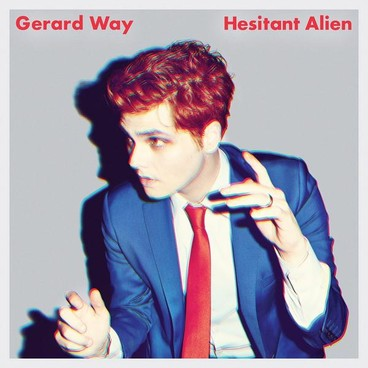

This is a list of all my favorite celebrities. From bands to YouTube, everyone here is prodigious.
From the band, 'Black Veil Brides', Andy is the lead vocalist. His band was in Van's Warped Tour a few times. Andy is prodigious because he is a great singer. I love his voice. He is also awesome because he helps his band write songs. The whole band has input which is great.
From a band called 'My Chemical Romance', Gerard Way was the lead vocalist. He used to have an alcohol problem but he overcame it. Since the band broke up, he started his own album called "Hesitant Alien." Gerard also has his own comic which is super awesome. With his comic, 'Umbrella Academy' and his new album, he is very prodigious and awesome.
Dan Howell or danisnotonfire is a YouTube celebrity. Him and Phil Lester or AmazingPhil, live together and collab in most of their vids. Dan is prodigious because he makes people laugh and is relatable. Most of his videos are centered in how he is a 'fail.' This helps his fans connect with him and want to watch him. All of his videos are awesome. Dan's british accent is also funny and cute.